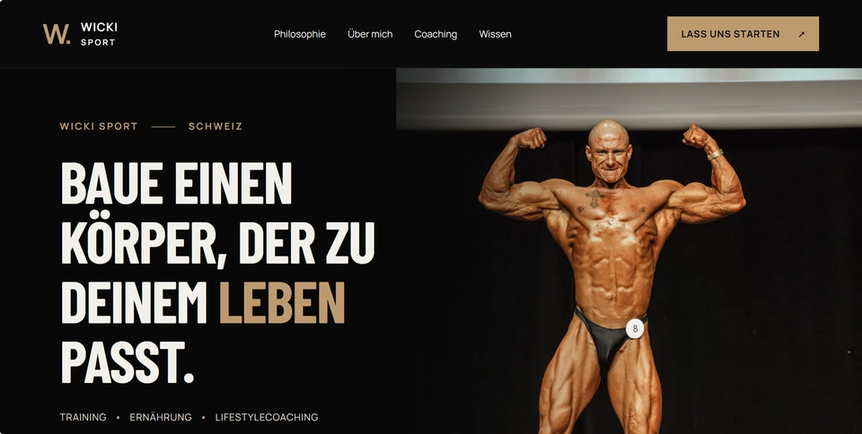

Eigenprojekt · Sportcoaching
Wicki Sport: ein eigener Webauftritt für mein Coaching
Wicki Sport ist mein eigenes Projekt im Bereich Training, Ernährung und Lifestylecoaching. Es zeigt einen von mir umgesetzten Webauftritt und ist kein unabhängiger Kundenauftrag.

Das Ziel
Mein Coaching sollte einen eigenen, zusammenhängenden Auftritt erhalten. Besucher sollen das Angebot kennenlernen, mehr über mich erfahren und den Weg zur Kontaktaufnahme finden.
Die Umsetzung
Ich habe für den Auftritt einen dunklen Hintergrund gewählt. Bronzefarbene Akzente heben die Handlungslinks hervor, und eigene Sportfotos zeigen den Bezug zum Coaching. In der Navigation trenne ich das Coaching-Angebot von den Seiten über meine Arbeitsweise und von den Wissensbeiträgen. So ist das Angebot direkt auffindbar.
Die Website wurde unter der eigenen Domain wickisport.ch veröffentlicht. Auf WICKI DIGITAL dient sie als konkretes Beispiel für Gestaltung und Umsetzung eines persönlichen Dienstleistungsangebots.
Was bedeutet das für dein Projekt?
Deine Website erhält eine Gestaltung, die zu dir und deinen Inhalten passt. Wir vereinbaren den Umfang separat: Ein Beispielprojekt kann mehr Inhalte enthalten, als im One-Pager- oder Business-Paket vorgesehen sind.
Websites für KMU und Selbstständige ↗
Websites für Privatpersonen ↗